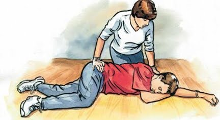
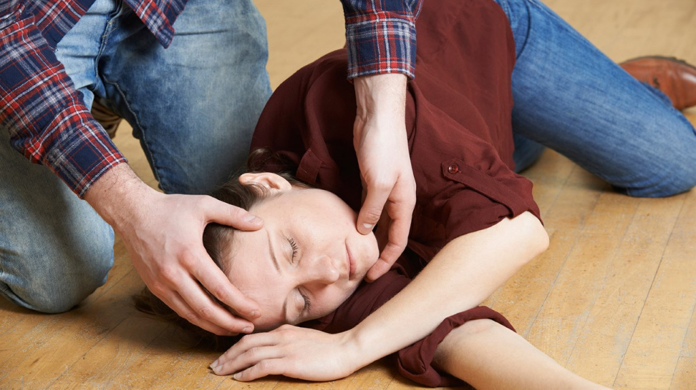

QICOLMALAR
Qıcolmalar (tutmalar) beyin fəaliyyətinin kəskin pozulması nəticəsində huşun itməsinə və əzələ-hərəkət gərginliyi ilə müşayiət olunan hallara deyilir.Beyinin bəzi hissələrinin aktivliyi nəticəsində bir qrup əzələlərdə gərginlik artır,onlar yığılır və bu vəziyyətdə bir müddət qalır. Belə hallar bəzən bərk ağrılarla müşayiət olunur və xəstəyə əziyyət verir.
Xalq arasında buna “özündəngetmə”, “ürək keçmə”, “tutma”, “müqəddəs xəstəlik”, “yıxılma xəstəliyi” və başqa bu kimi adlar verilmişdir. Heç də bütün qıcolmalara epilepsiya xəstəliyi demək olmaz.

Qıcolmalar niyə yaranır?
Yaranma səbəbləri:
- epilepsiya
- yüksək qızdırma(adətən uşaqlarda)
- infeksiyalar
- spirtli içkilər, kimyəvi və narkotik maddələrlə zəhərlənmələr
- baş beyinin travması,beyində oksigen çatışmazlığı
- beyin şişləri
- qanda şəkərin miqdarının aşağı düşməsi və s.
Qıcolma necə olur?
Qıcolmalar 2–3 dəqiqə davam edərək, xırıltı, sifətin göyərməsi, qeyri-iradi sidik ifrazı, dilin dişlənməsi,ağızdan köpük ifraz edilməsi ilə müşayiət olunur. Qıcolma zamanı xəstə yerə yıxılıb, baş beyin travması ala bilər,qusa bilər və huşunu itirdiyinə görə tənəffüs yolları mədə möhtəviyyatı ilə tutula bilər.
Qıcolmalar xəstənin həyatı üçün nadir hallarda (tənəffüsün dayanması zamanı) təhlükə yaradır.
Tutma qurtardıqdan sonra xəstə baş verənləri xatırlamır.
Qıcolmada ilk tibbi yardım necə aparılmalıdır?
- Qıcolma vaxtı xəstə yıxılıb, xəsarət ala bilər (baş beyin travması, yanıq, kəsilmiş yaralar və s). Buna görə,mümkündürsə, onun başını yıxılan zaman tutmağa çalışın.
- Tənəffüs yollarının mədə möhtəviyyatı ilə tutulmaması üçün qusan xəstənin başını yana çevirin

- Xəstənin ağzına barmaqlarınızı salmayın!
Xəstənin dişləri ağıza salınan yad cisimi (o cümlədən barmaqları)sındıra bilər və bu yad cisim xəstənin tənəffüs yollarını tuta bilər. Ağız boşluğuna qaşıq və ya ayrı alətlərlə müdaxilə etmək xəstənin əlavə xəsarət almasına səbəb olur (dişlərin sınması, dilin və ağızın yaralanması).
- Xəstənin ətraflarını və bədənini düzəltməyə cəhd etməyin!
- Xəstənin boynunu, sinəsini və belini sıxan paltarları açın, boşaldın,başının altına çox hündür olmayan yumşaq bir əşya qoyun.
- Xəstənin tənəffüsü sərbəstdirsə, onda təhlükə gözlənilmir və xəstəyə müdaxilə etmək lazım deyil (ağzını məcburi açmaq, dilini bayıra çıxartmaq və s.)
- Xəstə göyərirsə, deməli, tənəffüs yolları tutulub, o, nəfəs almır və orqanizm oksigenlə təmin olunmur. Oksigen çatışmazlığı nəticəsində huş itir, qıcolmalar qurtarır, əzələlər süstləşir. Ancaq qıcolmalar qurtardıqdan sonra tənəffüs yollarını açmaq üçün başın arxaya əyilməsi, çənənin irəli qaldırılması mümkün olur.
- Zərərçəkən 10 dəqiqədən çox huşunu itirərsə, qıcolmalar təkrarlanarsa və ya bu cür tutma ilk dəfədirsə,təcili tibbi yardım xidmətini aktivləşdirin
SİZİN RƏYİNİZ BİZİM ÜÇÜN ÖNƏMLİDİR!